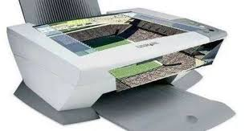

O Corinthians possui uma das melhores estruturas esportivas do Brasil, com destaque para seu estádio, centro de treinamento e instalações de base. A infraestrutura do clube é referência e faz parte fundamental no desempenho das equipes profissional e de base.
O principal palco do Corinthians é a Neo Química Arena, inaugurada em 2014, localizada no bairro de Itaquera, zona leste de São Paulo. O estádio foi uma das sedes da Copa do Mundo de 2014 e oferece uma estrutura moderna, com capacidade para mais de 47 mil torcedores, além de áreas VIP, camarotes e tecnologia de ponta.
Além do estádio, o Corinthians conta com o CT Joaquim Grava, inaugurado em 2010. O centro de treinamento é um dos mais completos da América Latina, com campos de alta qualidade, departamento médico moderno, academia, sala de imprensa e toda a estrutura necessária para preparação dos atletas.
Na formação de novos talentos, o clube também possui o Centro de Treinamento da Base, localizado em Itaquera, próximo à Neo Química Arena. O local é focado no desenvolvimento de jovens jogadores e contribui diretamente para revelar craques para o time principal.
Com investimento constante em sua estrutura, o Corinthians busca oferecer as melhores condições para atletas, comissão técnica e funcionários, reforçando seu status de um dos clubes mais organizados e estruturados do país.
